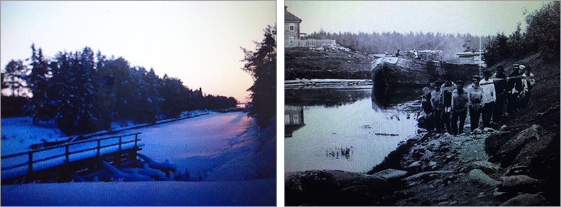
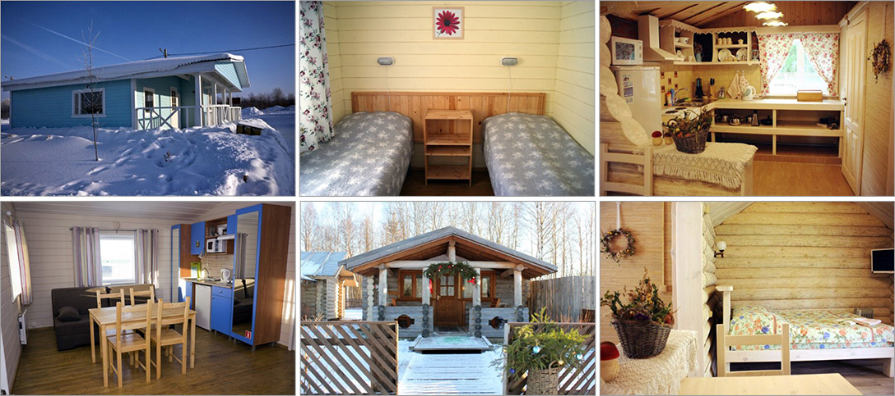

Есть в России малоизведанные места, где в стародавние времена была очень насыщенная жизнь. Наши предки волокли торговые и военные суда по суше с юга на север и обратно, затем прокладывали каналы, соединившие водоразделы северных и южных рек, создавая путь из "варяг в греки" - от волги до северных морей и Балтики. Не случайно возникали здесь крупнейшие монастыри Руси.
Наш лыжный поход пройдет по Северо-Двинскому каналу (называемому также каналом герцога Вюртембергского)- части Мариинской водной системы. Канал был проложен в рекордные сроки, в 1825-1828гг.
Мы посетим удивительные по красоте места, познакомимся с шедеврами русской архитектуры и просто приятно проведем время в комфортных домиках.
Маршрут подойдет как физически активным людям, так и неподготовленным лыжникам, предусмотрено частичное прохождение маршрута с доставкой микроавтобусом.
Маршрут начинается в Вологде (утром), где вас будут ожидать гиды, и будет организован трансфер до домиков на берегу озера. Размещаемся, завтракаем, примеряем лыжное снаряжение и идем по озеру Никольскому до Вознесенской церкви у истока реки Славянки. Ланч. Сегодня пробный маршрут 15 км, который уставшим можно наполовину сократить поездкой на машине сопровождения. Вечером для желающих посещение уникального музея русской гармошки.
Лыжный переход до Ферапонтовского монастыря - жемчужины Русского Севера.
Комплекс памятников Ферапонтова монастыря с сохранившимися фресками святого Дионисия является редким образцом русского северного монастырского ансамбля XV-XVII веков, здания которого, единственные на Русском Севере, сохранили все характерные особенности декора и интерьеров. Ансамбль Ферапонтова монастыря - удивительный пример гармоничного единения с практически не изменившимся с XVII века естесственным окружающим ландшафтом.
После завтрака грузим в автобус и движемся налегке по Северодвинской водной системе до озера Сиверского, на берегу которого находится знаменитый Кирилло-Белозерский монастырь.
По пути осмотрим старые шлюзы, которые сейчас активно реконструируются, Покровскую церковь на берегу одноименного озера, насладимся красотами севера.
Ночуем мы сегодня в экологической деревеньке прямо на берегу Сиверского озера, в симпатичных бревенчатых домиках со всеми удобствами. Желающие могут покататься на санках и ватрушках с горки, на коньках на озере или пострелять в тире.
Сегодня наш путь лежит по озеру Сиверское мимо Кирилло-Белозерского монастыря до Воскресенского Горицкого женского монастыря. По дороге поднимемся на знаменитое место силы- гору Маура, откуда старцу Кириллу открылся вид на место строительства будущего Кирилло-Белозерского монастыря. Там до сих пор сохранился камень с отпечатом ступни старца. Ставим ногу и загадываем желание :). По преданию, если наступить туда и загадать желание-непременно сбудется! :) Далее через место стоянки древних людей спускаемся к Горицкому монастырю, основанному в XVI веке родственницей Ивана Грозного.
В этот монастырь Иван Грозный ссылал своих жен: царицу Анну Алексеевну (4-я супруга), царицу Марию (последняя жена Ивана Грозного). Там же жила и царевна Ксения - дочь Б.Годунова. Эти женщины заложили основы бисероплятения в этих краях.Сегодня завтракаем, собираем вещи в автобус и направляемся в Кирилло-Белозерский монастырь, для осмотра которого нужно запланировать 3-5 часов. Стены крупнейшего в России монастыря протянулись более чем на километр, 11 храмов представляют прекрасный архитектурный ансамбль, заложенный ростовскими зодчими. Почти 400 лет он был крупнейшим духовным центром Руси. Именно в этом монастыре видел идеалы благочестия Иван Грозный - "спасительное пристанище для душ, последнее светило, сияющее как солнце".
Отъезд из Вологды лучше планировать на вечер.
 31декабря - 4 января
5 января - 9 января
15 марта - 19 марта
Стоимость маршрута уточняйте на странице КАЛЕНДАРЬ, там же можно подать заявку на участие.